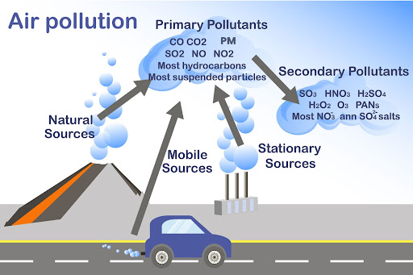

Our environment faces several problems and many of these seem to be worsening with time, bringing us into a time of a true environmental crisis. Therefore enhancing public awareness of these problems is essential to lessen their detrimental effects. Environmental pollution is increasing day by day and imposing severe and irreversible damage to the world. It is of different types: air, water, soil, noise, light, etc. Urbanization and technological development have put the survival of the planet in danger by degrading the quality of the environment’s essential elements—air, water and soil—due to the release of hazardous waste from factories like plastics, heavy metals, nitrates, burning of fossil fuels, acid rain, oil spills and industrial toxins. Urbanization and overpopulation have increased city noise and light pollution. Polluting agents are exponentially increasing in modern society, disturbing the ecological balance and posing extinction problems for different animal and bird species. This is because the destruction of plants, especially trees, by acid rains disturbs the natural environment of animals. The effect of pollution on the health of human being is well known, but it is a dire need to understand the link between environmental pollutants and mental health. In terms of strategies to solve the upcoming issues regarding environmental health, planning followed by action should be considered as a ground base for the manifestation of desired results in this direction. The possible solutions may include switching to eco-friendly electric vehicles, encouraging shared mobility, replacing fossil fuels with sustainable renewables like solar, wind, etc., and promoting green building. This chapter broadly reviews the causes of environmental pollution,
Air pollution, release into the atmosphere of various gases, finely divided solids, or finely dispersed liquid aerosols at rates that exceed the natural capacity of the environment to dissipate and dilute or absorb them. These substances may reach concentrations in the air that cause undesirable health, economic, or aesthetic effects.
Major air pollutants Clean, dry air consists primarily of nitrogen and oxygen—78 percent and 21 percent respectively, by volume. The remaining 1 percent is a mixture of other gases, mostly argon (0.9 percent), along with trace (very small) amounts of carbon dioxide, methane, hydrogen, helium, and more. Water vapour is also a normal, though quite variable, component of the atmosphere, normally ranging from 0.01 to 4 percent by volume; under very humid conditions the moisture content of air may be as high as 5 percent.
The release of substances into subsurface groundwater or into lakes, streams, rivers, estuaries, and oceans to the point that the substances interfere with beneficial use of the water or with the natural functioning of ecosystems. In addition to the release of substances, such as chemicals, trash, or microorganisms, water pollution may include the release of energy, in the form of radioactivity or heat, into bodies of water.

Land pollution refers to the deterioration of the earth's land surfaces at and below ground level. It is caused by the accumulation of solid and liquid waste materials that contaminate groundwater and soil. As different waste materials and pollutants like heavy metals, pesticides, plastic, litter and pharmaceuticals sit on top of and leach into our soil, they change and degrade its natural composition. Over time, some pollutants can also go through a chemical transformation, creating secondary pollutants like fumaric and phthalic acids. The permeability of the soil formations below the waste can increase or reduce the risk of land pollution. The higher the permeability of the soil, the more likely that land pollution will occur. Meanwhile, extreme weather events like hurricanes and floods can exacerbate the effects of land pollution as they disperse or concentrate certain pollutants.
resume